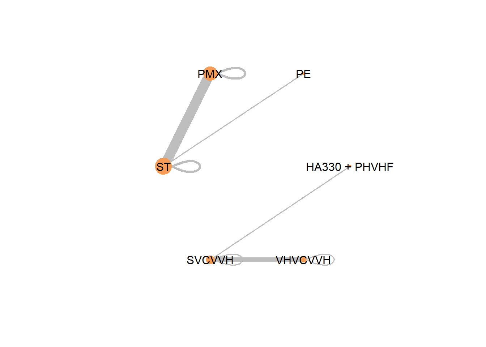
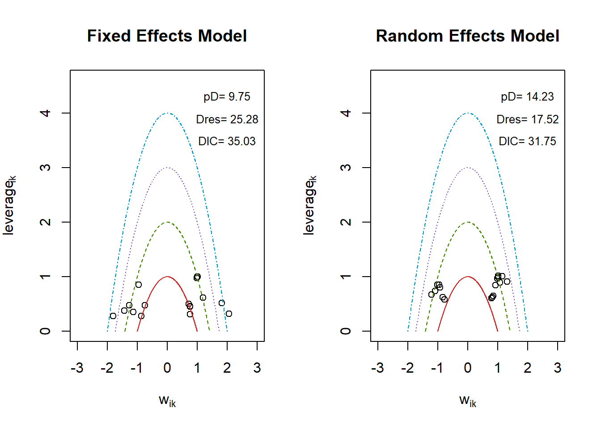
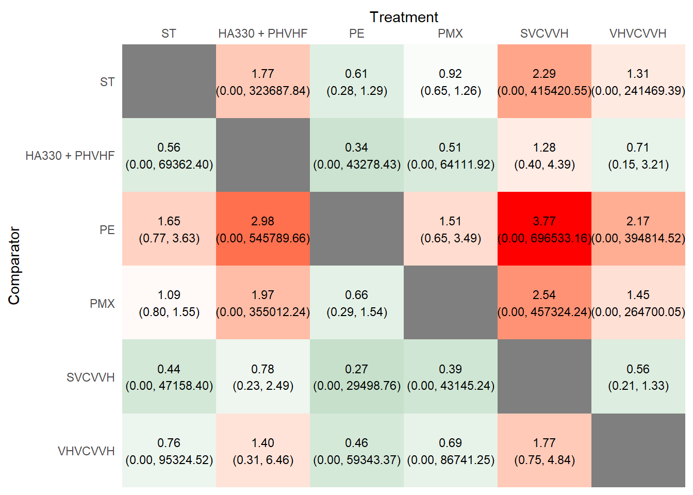
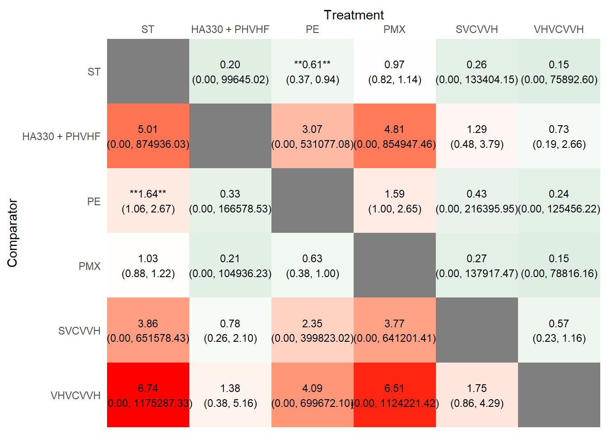

# install.packages('pacman')
library(pacman)Warning: пакет 'pacman' был собран под R версии 4.5.2pacman::p_load('BUGSnet', 'dplyr', 'tidyr', 'stringr')
set.seed(12345)This is a Quarto website.
To learn more about Quarto websites visit https://quarto.org/docs/websites.
# install.packages('pacman')
library(pacman)Warning: пакет 'pacman' был собран под R версии 4.5.2pacman::p_load('BUGSnet', 'dplyr', 'tidyr', 'stringr')
set.seed(12345)DATA <- read.csv('https://docs.google.com/spreadsheets/d/14aXdaoIlexEhEPIVylDPF3HLr28ChyRIYGMEqWnDI0A/gviz/tq?tqx=out:csv&headers=1&sheet=Sheet1', header = TRUE) |>
select(study, starts_with(c("group_code", "n_events", "n_patients"))) |>
pivot_longer(
cols = starts_with(c("group_code", "n_events", "n_patients")),
names_to = c(".value", "group_num"),
names_pattern = "(.*)_G(\\d+)$"
) |>
rename(
treatment = group_code,
responders = n_events,
sampleSize = n_patients,
study_id = study
) |>
arrange(study_id, group_num) |>
rename(study = study_id) |>
filter(treatment != '')data_prepared <- DATA %>%
rename(
Study = study,
Treatment = treatment,
r = responders, # число событий (умерло)
n = sampleSize # размер группы
) %>%
# Для network meta-analysis важно, чтобы каждая строка была уникальной комбинацией Study-Treatment
# У вас уже есть group_num, но обычно нужен только Study и Treatment
select(Study, Treatment, r, n)
network_data <- data.prep(
arm.data = data_prepared,
varname.t = "Treatment", # название столбца с вмешательствами
varname.s = "Study" # название столбца с исследованиями
)
net.plot(
network_data,
node.scale = 3,
edge.scale=1.5
)
network_char <- net.tab(
data = network_data,
outcome = "r", # число событий
N = "n", # размер выборки
type.outcome = "binomial" # бинарный исход (смерть/выживание)
)
# Посмотрим характеристики сети
print(network_char$network)# A tibble: 12 × 2
Characteristic Value
<chr> <chr>
1 Number of Interventions 6
2 Number of Studies 6
3 Total Number of Patients in Network 1339
4 Total Possible Pairwise Comparisons 6
5 Total Number of Pairwise Comparisons With Direct Data 8
6 Is the network connected? FALSE
7 Number of Two-arm Studies 3
8 Number of Multi-Arms Studies 3
9 Total Number of Events in Network 456
10 Number of Studies With No Zero Events 6
11 Number of Studies With At Least One Zero Event 0
12 Number of Studies with All Zero Events 0 # Посмотрим характеристики вмешательств
print(network_char$intervention)# A tibble: 6 × 7
Treatment n.studies n.events n.patients min.outcome max.outcome av.outcome
<chr> <int> <int> <int> <dbl> <dbl> <dbl>
1 HA330 + PHVHF 1 4 15 0.267 0.267 0.267
2 PE 1 18 54 0.333 0.333 0.333
3 PMX 5 189 573 0.275 0.412 0.330
4 ST 6 222 644 0.202 0.667 0.345
5 SVCVVH 3 17 35 0.4 0.6 0.486
6 VHVCVVH 2 6 18 0.333 0.333 0.333# Посмотрим характеристики сравнений
print(network_char$comparison)# A tibble: 8 × 5
comparison n.studies n.patients n.outcomes proportion
<chr> <int> <int> <int> <dbl>
1 HA330 + PHVHF vs. SVCVVH 1 30 10 0.333
2 PE vs. ST 1 106 46 0.434
3 PMX vs. PMX 8 1856 636 0.343
4 PMX vs. ST 33 7829 2707 0.346
5 ST vs. ST 8 1952 692 0.355
6 SVCVVH vs. SVCVVH 4 80 44 0.55
7 SVCVVH vs. VHVCVVH 16 304 136 0.447
8 VHVCVVH vs. VHVCVVH 4 72 24 0.333reference_treatment <- "ST"
# # Случайные эффекты модель для RR
nma_model_random <- nma.model(
data = network_data,
outcome = "r",
N = "n",
reference = reference_treatment,
family = "binomial",
link = "log", # для Risk Ratio
effects = "random",
)Warning: Unknown or uninitialised column: `sd`.# Фиксированные эффекты модель (для сравнения)
nma_model_fixed <- nma.model(
data = network_data,
outcome = "r",
N = "n",
reference = reference_treatment,
family = "binomial",
link = "log",
effects = "fixed"
)Warning: Unknown or uninitialised column: `sd`.# Запуск модели со случайными эффектами
nma_results_random <- nma.run(
nma_model_random,
n.burnin = 5000,
n.iter = 20000
)Compiling model graph
Resolving undeclared variables
Allocating nodes
Graph information:
Observed stochastic nodes: 18
Unobserved stochastic nodes: 24
Total graph size: 450
Initializing model# Запуск модели с фиксированными эффектами
nma_results_fixed <- nma.run(
nma_model_fixed,
n.burnin = 5000,
n.iter = 20000
)Compiling model graph
Resolving undeclared variables
Allocating nodes
Graph information:
Observed stochastic nodes: 18
Unobserved stochastic nodes: 11
Total graph size: 341
Initializing model# png(
# filename = paste0("leverage_plots_comparison",version,".png"),
# width = 1000, # ширина для двух графиков
# height = 600, # высота
# res = 150, # разрешение
# pointsize = 12 # размер шрифта
# )
par(mfrow = c(1, 2))
# Leverage plot для модели с фиксированными эффектами
fe_fit <- nma.fit(
nma_results_fixed,
main = "Fixed Effects Model"
)
# Leverage plot для модели со случайными эффектами
re_fit <- nma.fit(
nma_results_random,
main = "Random Effects Model"
)
# dev.off()
par(mfrow = c(1, 1)) # Forest plot для сравнения всех методов с референтным
# png(
# filename = paste0("forest_plot_random_",version,".png"), # имя файла
# width = 600, # ширина в пикселях
# height = 800, # высота в пикселях
# res = 150, # разрешение (DPI)
# pointsize = 12 # размер шрифта
# )
nma.forest(
nma_results_random, # используем результаты модели со случайными эффектами
central.tdcy = "median", # используем медиану как точечную оценку
comparator = reference_treatment, # сравниваем с референтным лечением
log.scale = TRUE # TRUE для логарифмической шкалы (обычно для RR)
)# dev.off()# Forest plot для сравнения всех методов с референтным
# png(
# filename = paste0("forest_plot_fixed_",version,".png"), # имя файла
# width = 600, # ширина в пикселях
# height = 800, # высота в пикселях
# res = 150, # разрешение (DPI)
# pointsize = 12 # размер шрифта
# )
nma.forest(
nma_results_fixed, # используем результаты модели со случайными эффектами
central.tdcy = "median", # используем медиану как точечную оценку
comparator = reference_treatment, # сравниваем с референтным лечением
log.scale = FALSE # TRUE для логарифмической шкалы (обычно для RR)
)
# dev.off()league.out <- nma.league(
nma_results_random,
central.tdcy = "median",
log.scale = FALSE, # FALSE для RR на натуральной шкале
low.colour = "springgreen4", # цвет для низких значений (лучшие)
mid.colour = "white", # цвет для средних значений
high.colour = "red", # цвет для высоких значений (худшие)
digits = 2 # число знаков после запятой
)
league.out$heatplot
# ggsave(paste0("league_table_heatmap_random",version,".png"),
# plot = league.out$heatplot,
# width = 14,
# height = 8,
# dpi = 300)league.out <- nma.league(
nma_results_fixed,
central.tdcy = "median",
log.scale = FALSE, # FALSE для RR на натуральной шкале
low.colour = "springgreen4", # цвет для низких значений (лучшие)
mid.colour = "white", # цвет для средних значений
high.colour = "red", # цвет для высоких значений (худшие)
digits = 2 # число знаков после запятой
)
league.out$heatplot
# ggsave(paste0("league_table_heatmap_fixed_",version,".png"), ,
# plot = league.out$heatplot,
# width = 14,
# height = 8,
# dpi = 300)